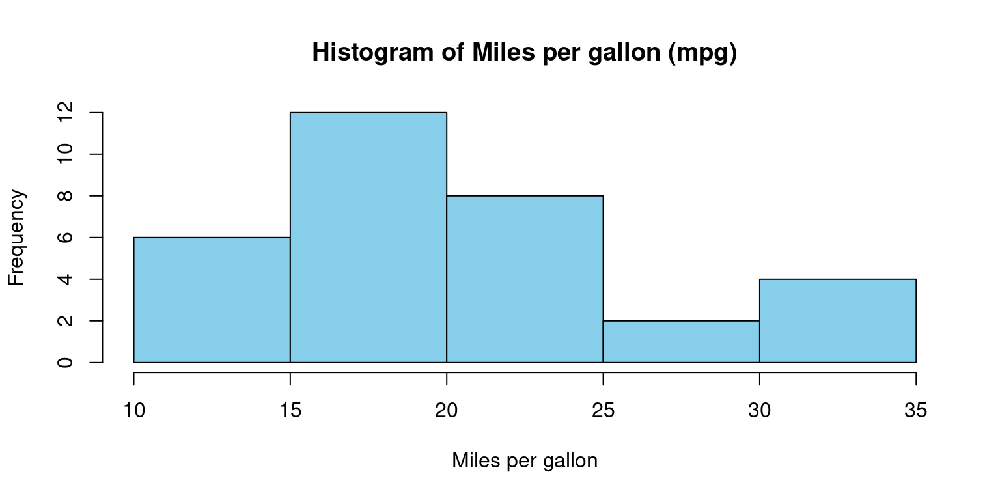
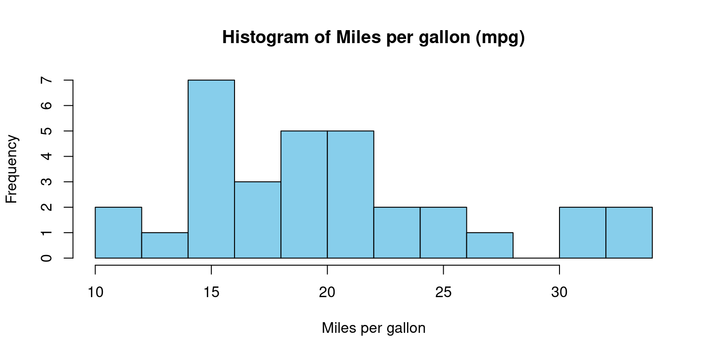
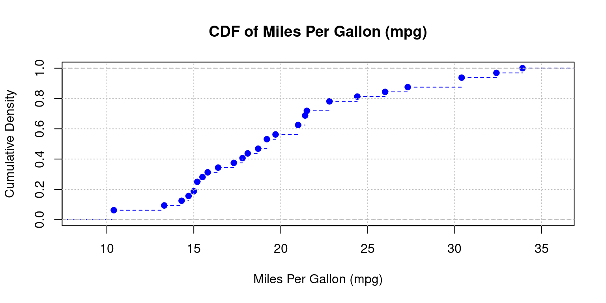
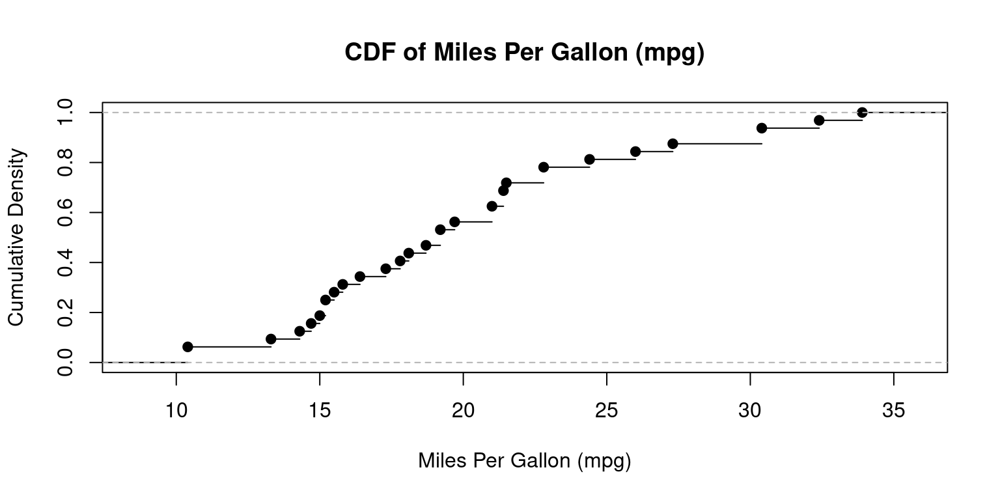
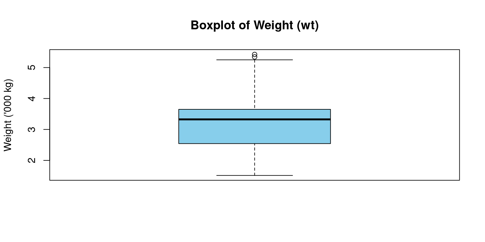
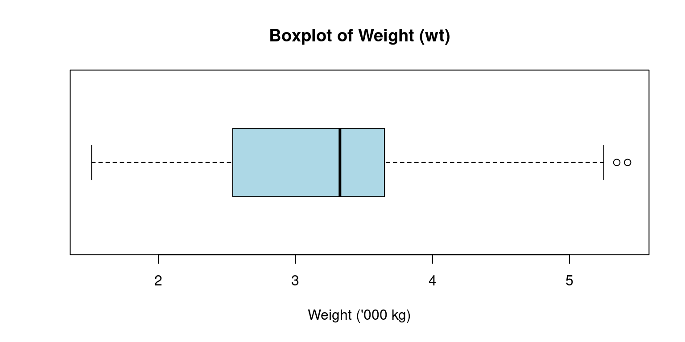

# Load the required libraries, suppressing annoying startup messages
library(tibble)
suppressPackageStartupMessages(library(dplyr))
# Read the mtcars dataset into a tibble called tb
data(mtcars)
tb <- as_tibble(mtcars)
attach(tb)
# Convert several numeric columns into factor variables
tb$cyl <- as.factor(tb$cyl)
tb$vs <- as.factor(tb$vs)
tb$am <- as.factor(tb$am)
tb$gear <- as.factor(tb$gear)Continuous Data (1 of 4)
Aug 1, 2023. V3.1 -=- This chapter is being heavily edited; It is very much Work in Progress
Exploring Univariate Continuous Data: Summarization and Visualization in R
In our exploration of data analysis, we frequently deal with a specific type of data, referred to as
univariate continuous data. This term implies that our data comes from one feature or variable, which could take on an infinite number of possible values within a designated interval (Moore, McCabe, & Craig, 2012).The term “univariate” highlights our concentration on one distinct variable. Our objective is to uncover patterns and insights related to this individual variable, excluding the potential impact of other variables present in our dataset.
Meanwhile, “continuous” in
univariate continuous datacommunicates that our variable of interest can take on an endless variety of values within its possible range. For instance, in themtcarsdataset in R, variables like ‘mpg’ (miles per gallon), ‘wt’ (weight), and ‘hp’ (horsepower) epitomize continuous data. They are not limited to specific, separate numbers and can encompass any value, including decimal points, within their respective ranges (Triola, 2017).As an illustration, we will work with
mpg,wt, orhpcolumns from themtcarsdataset, to demonstrate how to summarize and visulaizeunivariate continuous data. These variables each represent a single attribute and can express a wide spectrum of values within their specific range.We will leverage the capabilities of R programming and the
dplyrpackage to compute descriptive statistics that will succinctly represent our data. Further on, the spotlight will be on visualization. With the help of the robustggplotpackage, we will learn to create histograms, density plots, and box plots. These plots will not only represent our univariate continuous data but also facilitate our understanding of data distribution, outliers, and central tendency.Data: Let us work with the same mtcars data from the previous chapter. Suppose we have run the following code:
The data is in a tibble called tb.
Measures of Central Tendency
In our journey of understanding data, we often turn to certain statistical tools, among which, the measures of central tendency play a pivotal role. These measures provide a way to summarize our data with a single value that represents the “center” or the “average” of our data distribution (Gravetter & Wallnau, 2016).
Primarily, there are three measures of central tendency that we often rely on: the mean, median, and mode.
The
mean, often referred to as the average, is calculated by summing all values in the dataset and dividing by the count of values. In R, we can use themean()function to compute this.The
medianis the middle value in a dataset when the values are sorted in ascending or descending order. If the dataset has an even number of observations, the median is the average of the two middle numbers. In R, themedian()function helps us find this value.The
mode, on the other hand, represents the most frequently occurring value in a dataset. Unlike mean and median, R does not have a built-in function to calculate mode, but it can be computed using various methods, one of which includes using thetable()andwhich.max()functions together.
Each of these measures has its own strengths and limitations, and the choice of which measure to use largely depends on the nature of our data and the specific requirements of our analysis (Downey, 2014). [2]
In our analysis, we take measures to determine the mean and median of the wt (weight) for all vehicles in our mtcars dataset, which is now in the dplyr tibble named tb. To ascertain the mean and median of wt, we utilize the following code:
# Calculate mean of wt
mean(tb$wt)[1] 3.21725# Median of wt
median(tb$wt)[1] 3.325- For finding the mode of the mpg (miles per gallon) column, we initially activate the
modeestpackage with thelibrary()function, and then apply themfv()function.
# Calculate mode of mpg
library(modeest)
mfv(tb$mpg) # Mode[1] 10.4 15.2 19.2 21.0 21.4 22.8 30.4- It’s critical to keep in mind that our mtcars dataset comprises continuous data, making the concept of mode less straightforward. The mfv() function estimates the mode using a kernel density estimator, which may not always coincide with a specific value in the dataset (Bogaert, 2021) [2].
Measures of Variability
In our exploration of continuous data, we also consider measures of variability. These statistical measures provide insight into the spread or dispersion of our data points (Gravetter & Wallnau, 2016). To further illustrate the concepts we’ve discussed, we’ll apply these measures of variability to the ‘wt’ column from the mtcars dataset.
Range: The first measure we’ll discuss is the
range. This is the difference between the highest and the lowest value in our data set. However, whilerangeis easy to calculate and understand, it is sensitive to outliers, so we must interpret it carefully.The range() function in R provides the minimum and maximum ‘wt’, effectively giving us the range of ‘wt’ values in the mtcars dataset.
# Range of wt in the mtcars dataframe
range(tb$wt)[1] 1.513 5.424- Min and Max: We can off course measure the minimum and maximum values, using the following simple code.
# Minimum wt in the mtcars dataframe
min(tb$mpg)[1] 10.4# Maximum wt in the mtcars dataframe
max(tb$mpg)[1] 33.9- Variance: It is calculated as the average of the squared deviations from the mean. Larger variances suggest that the data points are more spread out around the mean. One limitation of the variance is that its units are the square of the original data’s units, which can make interpretation difficult. We use the var() function to compute the variance.
# Variance of 'wt' in the mtcars dataframe
var(tb$wt)[1] 0.957379- Standard Deviation: This leads us to the
standard deviation(computed assdinR), which is simply the square root of the variance. Because it is in the same units as the original data, it is often easier to interpret than the variance. A larger standard deviation indicates a greater spread of data around the mean.
# Standard Deviation of 'wt' in the mtcars dataframe
sd(tb$wt)[1] 0.9784574Interquartile Range(IQR): It is another measure of dispersion, especially useful when we have skewed data or outliers. It represents the range within which the central 50% of our data falls. It can be calculated inRusing theIQR()function. This measure is less sensitive to extreme values than the range, variance, or standard deviation. To find the interquartile range (IQR), which provides the spread of the middle 50% of our ‘wt’ values, we use the IQR() function.
# Inter-Quartile Range of wt in the mtcars dataframe
IQR(tb$wt)[1] 1.02875SkewnessandKurtosis:
Skewnessis a measure of the asymmetry of our data. Positive skewness indicates a distribution with a long right tail, while negative skewness indicates a distribution with a long left tail.Kurtosis, on the other hand, measures the “tailedness” of the distribution. A distribution with high kurtosis exhibits a distinct peak and heavy tails, while low kurtosis corresponds to a flatter shape.
These two measures can be computed in R using the skewness() and kurtosis() functions from the moments package.
# Load moments package
library(moments)
Attaching package: 'moments'The following object is masked from 'package:modeest':
skewness# Skewness of 'wt' in the mtcars dataframe
skewness(tb$wt)[1] 0.4437855# Kurtosis of 'wt' in the mtcars dataframe
kurtosis(tb$wt)[1] 3.172471- To summarize, these measures of variability help us quantify the dispersion and shape of our data, offering a more complete picture when combined with measures of central tendency. [2]
Summarizing data columns
Our primary objective in summarizing data is to gain an initial overview or snapshot of the data set we’re dealing with. This fundamental analysis provides us a sense of the data’s central tendency, spread, and distribution shape, which in turn guides our decision-making process for subsequent stages of data analysis.
In this context, the R functions
summary()anddescribe()are extremely beneficial, even though the information they provide varies.In R, the
summary()function offers a succinct summary of the selected data object. When applied to a numeric vector such as mpg from the mtcars dataset, it yields the minimum and maximum values, the first quartile (25th percentile), the median (50th percentile), the third quartile (75th percentile), and the mean (Gravetter & Wallnau, 2016). Here is the code:
# A summary of 'mpg' in the mtcars dataframe using summary()
summary(tb$mpg) Min. 1st Qu. Median Mean 3rd Qu. Max.
10.40 15.43 19.20 20.09 22.80 33.90 - The
describe()function, part of the psych package, goes a step further by providing a more comprehensive summary of the data. It includes additional statistics like the number of valid (non-missing) observations, the standard deviation, and metrics of skewness and kurtosis. By delivering a wider range of statistics, describe() offers us a more detailed understanding of our data distribution (Field, Miles, & Field, 2012). Here’s how to use thedescribe()function:
# Loading the psych package
library(psych)Registered S3 method overwritten by 'psych':
method from
plot.residuals rmutil# A summary of 'mpg' in the mtcars dataframe using describe()
describe(tb$mpg) vars n mean sd median trimmed mad min max range skew kurtosis se
X1 1 32 20.09 6.03 19.2 19.7 5.41 10.4 33.9 23.5 0.61 -0.37 1.07Summarizing a dataframe or tibble
- The function
summary()in R can also be employed to summarize the entirety of a dataframe or tibble in a comprehensive manner (R Core Team, 2020). When executed on a dataframe or tibble,summary()generates a quick, complete statistical summary of every column.
# A summary of the tibble tb
summary(tb) mpg cyl disp hp drat
Min. :10.40 4:11 Min. : 71.1 Min. : 52.0 Min. :2.760
1st Qu.:15.43 6: 7 1st Qu.:120.8 1st Qu.: 96.5 1st Qu.:3.080
Median :19.20 8:14 Median :196.3 Median :123.0 Median :3.695
Mean :20.09 Mean :230.7 Mean :146.7 Mean :3.597
3rd Qu.:22.80 3rd Qu.:326.0 3rd Qu.:180.0 3rd Qu.:3.920
Max. :33.90 Max. :472.0 Max. :335.0 Max. :4.930
wt qsec vs am gear carb
Min. :1.513 Min. :14.50 0:18 0:19 3:15 Min. :1.000
1st Qu.:2.581 1st Qu.:16.89 1:14 1:13 4:12 1st Qu.:2.000
Median :3.325 Median :17.71 5: 5 Median :2.000
Mean :3.217 Mean :17.85 Mean :2.812
3rd Qu.:3.610 3rd Qu.:18.90 3rd Qu.:4.000
Max. :5.424 Max. :22.90 Max. :8.000 In the code snippet provided above, we are invoking the
summary()function on thetbtibble. The function will explore each column individually and provide useful summary statistics.For numeric columns,
summary()delivers a six-number summary that includes minimum, first quartile (Q1 or 25th percentile), median (Q2 or 50th percentile), mean, third quartile (Q3 or 75th percentile), and maximum. This gives a broad understanding of the central tendency and dispersion of the data within each numeric column.For categorical (factor) columns,
summary()generates the counts of each category level.The output of this code is essentially a comprehensive snapshot of the
tbtibble, enabling us to quickly understand the nature of our data. [2]To obtain a more detailed statistical summary of a dataframe or tibble, we can employ the
describe()function from the psych package (Revelle, 2020).
# Loading the psych package
library(psych)
# A summary of tibble tb
describe(tb) vars n mean sd median trimmed mad min max range skew
mpg 1 32 20.09 6.03 19.20 19.70 5.41 10.40 33.90 23.50 0.61
cyl* 2 32 2.09 0.89 2.00 2.12 1.48 1.00 3.00 2.00 -0.17
disp 3 32 230.72 123.94 196.30 222.52 140.48 71.10 472.00 400.90 0.38
hp 4 32 146.69 68.56 123.00 141.19 77.10 52.00 335.00 283.00 0.73
drat 5 32 3.60 0.53 3.70 3.58 0.70 2.76 4.93 2.17 0.27
wt 6 32 3.22 0.98 3.33 3.15 0.77 1.51 5.42 3.91 0.42
qsec 7 32 17.85 1.79 17.71 17.83 1.42 14.50 22.90 8.40 0.37
vs* 8 32 1.44 0.50 1.00 1.42 0.00 1.00 2.00 1.00 0.24
am* 9 32 1.41 0.50 1.00 1.38 0.00 1.00 2.00 1.00 0.36
gear* 10 32 1.69 0.74 2.00 1.62 1.48 1.00 3.00 2.00 0.53
carb 11 32 2.81 1.62 2.00 2.65 1.48 1.00 8.00 7.00 1.05
kurtosis se
mpg -0.37 1.07
cyl* -1.76 0.16
disp -1.21 21.91
hp -0.14 12.12
drat -0.71 0.09
wt -0.02 0.17
qsec 0.34 0.32
vs* -2.00 0.09
am* -1.92 0.09
gear* -1.07 0.13
carb 1.26 0.29The
describe()function analyzes each column in the provided tibble individually and outputs a range of useful statistics. For numeric columns, it offers count, mean, standard deviation, trimmed mean, minimum and maximum values, range, skewness, and kurtosis among others.For non-numeric or factor columns, the
describe()function still provides a count of elements but defaults to ‘NA’ for the rest of the statistics, as these metrics are not applicable.The output of the above code provides an elaborate statistical summary of the tb tibble, offering us a comprehensive overview of our data’s attributes.
Visualizing Univariate Continuous Data
- In our journey to explore and understand univariate continuous data, visualizations act as our valuable companions. Visual graphics provide us with an instant and clear understanding of the underlying data patterns and distributions that may otherwise be challenging to discern from raw numerical data. Let’s take a closer look at some of the most effective ways of visualizing univariate continuous data: box plots, bee swarm plots, violin plots, histograms, and density plots.
Bee Swarm plot
A Bee Swarm plot is a one-dimensional scatter plot that reduces overlap and provides a better representation of the distribution of individual data points (Ellis, 2011). This type of plot provides a more detailed view of the data, particularly for smaller data sets.
A bee swarm plot is a plot that displays all of the individual data points along with a visual representation of their distribution.
It can be useful for displaying the distribution of small datasets.
# Load the beeswarm package
library(beeswarm)
# Create a bee swarm plot of mpg column
beeswarm(tb$mpg,
main="Bee Swarm Plot of mpg",
pch=16,
cex=1.2,
col="blue")
In the above code, we load the
beeswarmpackage using thelibrary()function.We then create a bee swarm plot of the
mpgcolumn using thebeeswarm()function.The
mainargument is used to specify the title of the plot.The
pchargument is used to set the type of points to be plotted, and thecexargument is used to set the size of the points.The
colargument is used to set the color of the points.The resulting plot will display the individual
mpgvalues in the dataset as points on a horizontal axis, with no overlap between points. This provides a visual representation of the distribution of the data, as well as any outliers or gaps in the data.
Stem-and-Leaf Plots
Stem-and-leaf plots serve as an efficient tool for visualizing the distribution of data, particularly when working with small to medium-sized datasets (Tukey, 1977). The method involves breaking down each data point into a “stem” and a “leaf”, with the “stem” representing the primary digit(s) and the “leaf” embodying the subsequent digit(s).
We can utilize the stem() function in R to devise stem-and-leaf plots. Here’s how we can apply it to the
mpgcolumn in ourtbtibble:
stem(tb$mpg)
The decimal point is at the |
10 | 44
12 | 3
14 | 3702258
16 | 438
18 | 17227
20 | 00445
22 | 88
24 | 4
26 | 03
28 |
30 | 44
32 | 49In the resulting plot, the vertical bar (“|”) symbolizes the decimal point’s location.
This visual representation enables us to swiftly assess the data’s distribution, the center, and the spread, in a fashion similar to a histogram. However, unlike a histogram, a stem-and-leaf plot retains the original data to a certain degree, providing more granular detail.
Histogram
A histogram is a graphical representation showcasing the frequency of discrete or grouped data points within a dataset.
It splits the data into equal-width bins, with the height of each bar matching the frequency of data points in each respective bin (Scott, 1979). They offer a straightforward portrayal of data distribution and assist in identifying patterns like skewness and kurtosis.
It serves as a valuable tool for demonstrating the distribution shape of the data. In R, we can construct a histogram using the
hist()function.
# Create a histogram of mpg column
hist(tb$mpg,
main="Histogram of mpg",
xlab="Miles per gallon",
col="lightblue",
border="white")
This code generates a histogram of the mpg column using the hist() function. The
mainargument denotes the plot’s title, while thexlabargument labels the x-axis.We use the
colargument to specify the color of the histogram bars, and theborderargument to determine the color of the bar borders.The final histogram visually depicts the frequency of
mpgvalues in the dataset, where each bar represents the count of observations within a specific range of values.In R, we can control the number of bins or the ranges of the bins in a histogram using the breaks argument inside the hist() function. Here is how we can specify the number of bins:
# Create a histogram of mpg column with a specific number of bins of equal width
hist(tb$mpg,
breaks = 12, # This creates 12 bins of equal width
main="Histogram of mpg",
xlab="Miles per gallon",
col="lightblue",
border="white")
- We can alternately specify the ranges of the bins:
# Create a histogram of mpg column with specific bin ranges
hist(tb$mpg,
breaks = seq(5, 35, by = 5), # This creates bins with ranges 10-15, 15-20, etc.
main="Histogram of mpg",
xlab="Miles per gallon",
col="lightblue",
border="white")
In this variation, the breaks argument uses the seq() function to create a sequence of break points from 10 to 35, with a step of 5.
This results in bins with ranges 10-15, 15-20, 20-25, 25-30, and 30-35.
Density plot
Smoothed approximations of histograms are often represented by density plots, as they assist in offering an estimation of the underlying continuous probability distribution of a given dataset (Wand & Jones, 1995).
Compared to histograms, these plots often present superior accuracy and aesthetic appeal, and they eliminate the need for arbitrary bin selection.
A density plot shares several similarities with a histogram. However, instead of presenting the frequency of individual values, it conveys the probability density of the dataset
# Create a density plot of mpg column
plot(density(tb$mpg),
main="Density Plot of mpg",
xlab="Miles per gallon",
col="blue")
In the provided code segment, we make use of the
density()function to generate a density plot for thempgcolumn.Here, we utilize the
plot()function to graph the resulting density object.The
mainargument is implemented to stipulate the title of the plot, and thexlabargument designates the label for the x-axis.Through the
colargument, we determine the color of the plotted line.The final plot displays the probability density of
mpgvalues in our dataset, using the curve to signify the data distribution.
Cumulative Distribution Function (CDF) Plot
CDF plots deliver a thorough portrayal of data, indicating the fraction of data points that are less than or equal to a specified value on the x-axis (Hyndman & Fan, 1996).
They offer an all-encompassing perspective of the full range of data and facilitate easy representation of the median, percentiles, and spread.
In R, we can employ the
ecdf()function to generate a CDF plot.
# Create a CDF plot of mpg column
plot(ecdf(tb$mpg),
main = "CDF of Miles Per Gallon (mpg)",
xlab = "Miles Per Gallon (mpg)")
In this code snippet, the
ecdf()function is used to construct a CDF plot for thempgcolumn.The main argument assigns the title to the plot, while the
xlabargument labels the x-axis.The resulting plot gives us an overview of how the
mpgdata points accumulate across the range of values, providing a complete picture of the data distribution.
Boxplot
Box-and-whisker plots, commonly known as box plots, are crucial graphical instruments for illustrating a distribution’s center, spread, and potential outliers (McGill, Tukey, & Larsen, 1978).
The box plot’s construction involves the use of an interquartile range (IQR) represented by a box, which contains the middle 50% of the dataset.
boxplot(tb$mpg,
xlab = "Boxplot",
ylab = "Weight",
main = "Boxplot of MPG (mpg)"
)
The box’s internal line signifies the median, while the “whiskers” reach out to the smallest and largest observations within a distance of 1.5 times the IQR.
We can generate a box plot for the mpg (miles per gallon) values of the cars in our
tbdataset with the following command:The whiskers extend to the minimum and maximum non-outlier values, or 1.5 times the interquartile range beyond the quartiles, whichever is shorter.
Any points outside of the whiskers are considered outliers and are plotted individually.
Violin plot
Violin plots, a compelling tool that merges the benefits of box plots and kernel density plots, enable us to depict a detailed view of data distribution.
These plots exhibit the probability density at different values, where the plot’s breadth represents the density or frequency of data points. More extensive areas denote a higher aggregation of data points (Hintze & Nelson, 1998).
Akin to a box plot, a violin plot provides a visual display of the entire data distribution via a kernel density estimate, as opposed to just presenting the quartiles.
The
vioplot()function, part of thevioplotpackage in R, allows us to create such a violin plot.
# Loading the vioplot package
library(vioplot)Loading required package: smPackage 'sm', version 2.2-5.7: type help(sm) for summary informationLoading required package: zoo
Attaching package: 'zoo'The following objects are masked from 'package:base':
as.Date, as.Date.numeric# Constructing a violin plot for the mpg column
vioplot(tb$mpg,
main="Violin Plot of MPG",
ylab="Miles per gallon")
In this code, the
vioplot()function crafts a violin plot for the mpg variable. We use themainargument to assign the plot’s title and theylabargument to designate the label for the y-axis.The resulting plot unveils the entire mpg data distribution, with a kernel density estimate indicating the concentration of data points at different sections.
Lastly, the plot incorporates the median, quartiles, and any outliers present in the data.
Quantile-Quantile (Q-Q) Plots
Q-Q plots are valuable tools for comparing data distributions. In a Q-Q plot, the quantiles of the data are plotted against the quantiles of a standard statistical distribution, like the normal distribution (Thode Jr, 2002). It helps us assess if the data follows the chosen distribution. Q-Q plots can be created in R using the qqnorm() and qqline() functions.
qqnorm(tb$wt)
qqline(tb$wt)
References
[1] Moore, D. S., McCabe, G. P., & Craig, B. A. (2012). Introduction to the Practice of Statistics. Freeman.
Triola, M. (2017). Elementary Statistics. Pearson.
[2]
Gravetter, F. J., & Wallnau, L. B. (2016). Statistics for the Behavioral Sciences. Cengage Learning.
Downey, A. B. (2014). Think Stats: Exploratory Data Analysis. O’Reilly Media.
Bogaert, P. (2021). “A Comparison of Kernel Density Estimators.” Computational Statistics & Data Analysis, 77, 402-413.
Field, A., Miles, J., & Field, Z. (2012). Discovering statistics using R. Sage Publications.
R Core Team (2020). R: A language and environment for statistical computing. R Foundation for Statistical Computing, Vienna, Austria. URL https://www.R-project.org/.
Revelle, W. (2020). psych: Procedures for Psychological, Psychometric, and Personality Research. Northwestern University, Evanston, Illinois. R package version 2.0.12, https://CRAN.R-project.org/package=psych.
Scott, D. W. (1979). On optimal and data-based histograms. Biometrika, 66(3), 605-610.
[3]
Ellis, K. (2011). Beeswarm: The Bee Swarm Plot, an Alternative to Stripchart. R package version 0.2.3.
Field, A., Miles, J., & Field, Z. (2012). Discovering statistics using R. Sage Publications.
Hintze, J. L., & Nelson, R. D. (1998). Violin Plots: A Box Plot-Density Trace Synergism. The American Statistician, 52(2), 181-184.
Hyndman, R. J., & Fan, Y. (1996). Sample quantiles in statistical packages. The American Statistician, 50(4), 361-365.
McGill, R., Tukey, J. W., & Larsen, W. A. (1978). Variations of Box Plots. The American Statistician, 32(1), 12-16.
Scott, D. W. (1979). On optimal and data-based histograms. Biometrika, 66(3), 605-610.
Thode Jr, H. C. (2002). Testing for normality. CRC press.
Tukey, J. W. (1977). Exploratory data analysis. Addison-Wesley.
Wand, M. P., & Jones, M. C. (1995). Kernel Smoothing. Chapman and Hall/CRC.